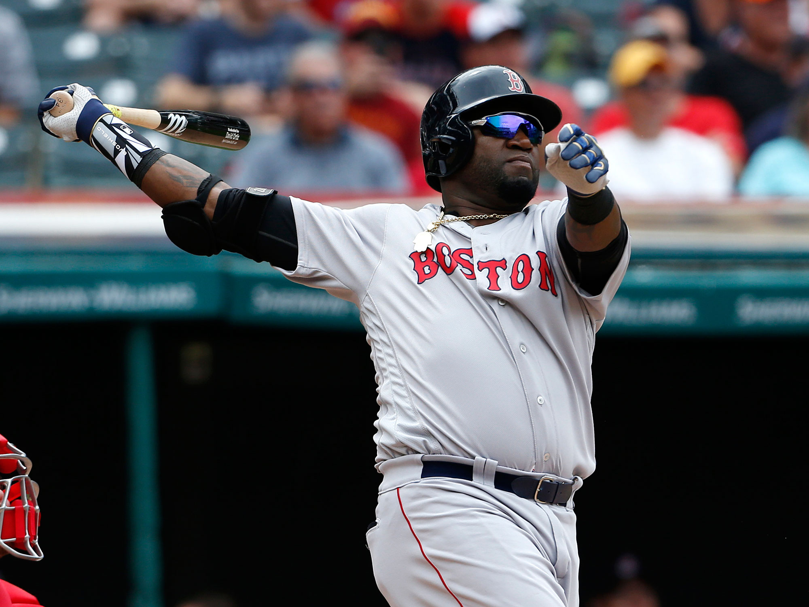

| Contact |
Name |
Email Address |
Phone |
| Info |
James Ouellette |
james.ouellette1@maine.edu |
207-320-3865 |
Baseball was never my favorite sport to play, but I loved to watch it.
The best player to ever swing a bat in my opinion is David Ortiz.

During his 14 seasons with the Red Sox, he was a ten-time All-Star, a three-time World Series champion, and seven-time Silver Slugger winner. Ortiz also holds the Red Sox single-season record for home runs with 54, which he set during the 2006 season.